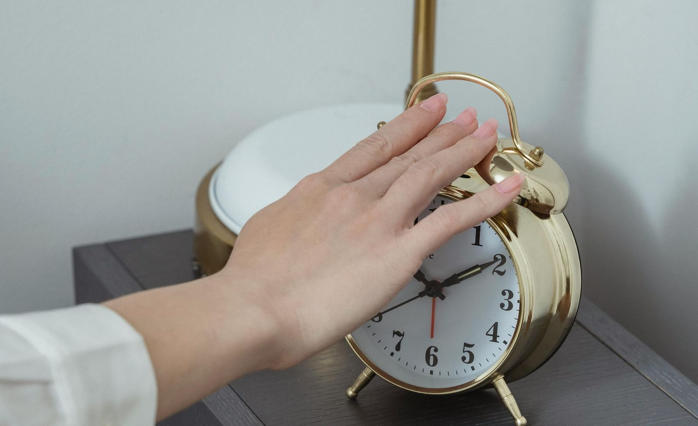

There is a particular kind of mental noise that doesn't announce itself. It just hums in the background — a decision you keep circling, a conversation that replayed three times without resolving, a feeling you can identify by its weight but not by its name. You think about it on the way to work. You think about it in the shower. You think about it at 2am, which is the least productive time possible to think about anything.
For a long time I thought the solution was to think harder. More systematically. To analyze my way into clarity. That didn't work. What worked — almost embarrassingly simply — was writing it down. Not in any formal way. Not in a diary I'd curate or a journal I'd worry about. Just moving the thoughts from inside my head to outside it, somewhere I could actually see them.
This serves one purpose above all others: it gets the thoughts out of your head and onto the page. And that distance — from carrying something inside you to looking at it from the outside — turns out to be enough. Enough to find the clarity you were searching for. Enough to see the direction you want to take. Enough to finally stop circling and decide.
The act of writing separates you from your thoughts. Suddenly they're outside you — and that distance is enough to finally see them clearly.
What Morning Pages Actually Are
Julia Cameron introduced Morning Pages in her book The Artist's Way — originally as a tool for creatives who'd lost their way. The practice is almost aggressively simple: three pages of longhand, stream-of-consciousness writing, every morning, in a notebook. No topic requirements. No editing. No rereading. The pages are private. That's essentially the whole instruction.
Cameron's framing was specifically about creative unblocking, but what she was really describing is a daily brain dump — a way to clear whatever is sitting in your mind before the day asks anything of you. Not a record for posterity. Not a finished product. Just the thoughts that are there, moved somewhere they can exhaust themselves without living in your nervous system.
The goal, as Cameron puts it, is not to create something worth keeping. The goal is to reconnect with yourself — your actual thoughts, your inner world, the quiet voice that gets crowded out by noise — before the noise starts again. Some days that looks like pages of profound self-reflection. Other days it looks like: I need to buy milk. I'm annoyed at that email. The light this morning is beautiful. Why am I tired. I don't know what I want for lunch. Both are valid. Both are the practice.
Morning Pages don't have to be beautiful. They just have to be honest.
What Happens When You Show Up Every Day
I want to walk through what Morning Pages actually do — not the idealized version, but what I've noticed in practice, and what the people I've seen adopt this practice have noticed too.
The first thing is self-awareness, and it's the one that sneaks up on you. When you write every day, patterns emerge that you can't see in the moment but become impossible to miss over time. You notice you've written about the same worry in three different forms this week. That Monday mornings have a specific texture. That a particular relationship consistently costs you more energy than you let yourself acknowledge out loud. Having it there — in your own handwriting, in your own words — makes it harder to look away from.
The second is emotional regulation. There is something physiologically different about externalizing anxiety, frustration, or fear onto a page versus holding it inside you. Writing doesn't make the thing causing those feelings disappear. But it changes your relationship to it — and that shift is real. Morning Pages provide a safe, private outlet where the feeling can exist without it being performed for anyone or managed for anyone. It reduces stress in a way that just thinking about something, no matter how intently, does not.
And then there's the creativity piece, which I'll admit I was skeptical about until it started happening. The private nature of the pages — the fact that nothing has to be good — means your mind will occasionally wander somewhere it wouldn't go through deliberate thinking. A project idea. A solution that surfaces sideways. A memory that holds something you needed. When there's no pressure on the page, sometimes something genuinely surprising comes through.
Over time, you also accumulate something quietly valuable: a record of who you were. The worries that felt enormous and eventually resolved. The shift in how you thought about something from January to April. The version of yourself that was scared of something you no longer are. Looking back at Morning Pages is one of the stranger and more grounding experiences — it shows you your own growth in a way that's hard to fake or rationalize.
Three Pages Is a Lot. Start Smaller.
I'll be honest with you: when I first encountered "three pages of longhand, every morning," my instinct was to close the book. Three pages is a significant commitment. Longhand is slower than typing. And "every morning, without exception" sounds like one more thing to fail at before 9am.
Here is what I want to say clearly: any Morning Pages are better than none. The practice is a tool, not a rule. Cameron's own framework is generous — the three pages are a guideline for what she found most effective, not a requirement for doing it at all. Miss a day. Write half a page. Type it. Do it at noon instead of morning and call them Daily Pages. The adaptation is allowed.

The morning is the only time the day hasn't asked anything of you yet.
Half a page. Five minutes. A loose bulleted list of what's already on your mind. Once that feels natural, expand. You don't need to begin at three pages to benefit — you need to begin.
Longhand is the traditional form, and there is something to the slowness of it — it forces your thoughts to articulate rather than just stream. But if writing by hand is genuinely inaccessible or painful for you, type it. Voice-to-text counts. The medium isn't sacred. The showing up is.
James Clear calls this habit stacking in Atomic Habits — attaching a new practice to an existing ritual so the ritual becomes the cue. Coffee first thing? Keep your notebook next to the coffee maker. If you're already sitting with a hot drink every morning, writing while it cools costs you almost nothing.
Keep your writing tools ready and visible. The barrier between thinking about writing and actually writing should be as small as possible. If you have to go find a pen, you might not. If the notebook is already open on the table from yesterday, you probably will.
Sometimes you sit down and have genuinely nothing to say. That's okay — it's part of the practice. Below, I've collected the prompts I return to most. Starting with one line is enough to unlock the rest.
A notebook, a quiet few minutes, and whatever's on your mind. That's the whole practice.
Morning Pages Prompts
These are the ones I come back to most — the ones that tend to open something up when the page feels blank. You don't have to answer them fully. Let one line lead to the next.
"Today I feel…"
"What I really want to say but haven't is…"
"I am worried about…"
"If I could let go of one thing right now, it would be…"
"If I weren't afraid, I would…"
"Something I've been craving is…"
"A small change that would make today easier is…"
"What I keep circling back to lately is…"
"Wouldn't it be fun if…"
"If my life were a movie right now, the scene would be…"
"One thing I'm grateful for is…"
"My body feels…"
"If I could focus on only one thing today, it would be…"
"A word I want to carry into the day is…"
"A place I'd love to go is…"
"The weirdest thought I had yesterday was…"
Showing up for yourself doesn't have to look like anything in particular. It just has to be consistent.
Morning Pages work because they're yours and no one else's. There's no standard to meet, no audience to perform for, no version of them that counts as doing it wrong. The most important part is not the three pages — it's the act of giving yourself a few minutes every day where your thoughts are allowed to be honest, unfiltered, and private. That's rarer than it sounds. And it matters more than you might expect.
Write the thoughts down. Get them out of your head and onto the page. Then see what's left.